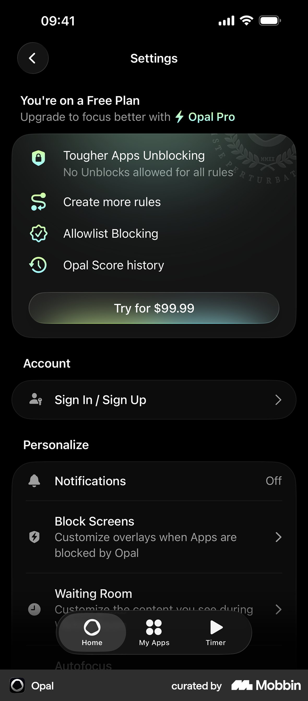
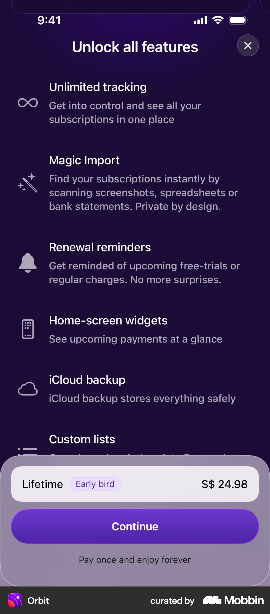
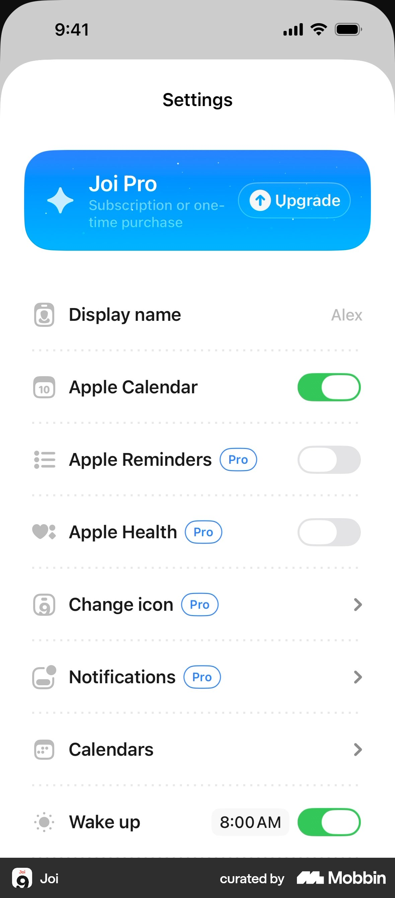
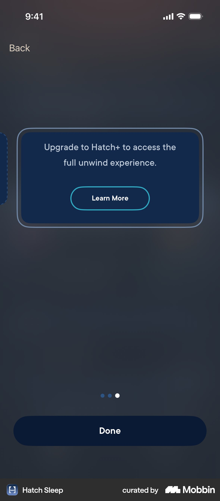

구독 안내 시트 레퍼런스
알람 편집에서 plus 기능을 누르면 뜨는 시트(TSK-319)를 그리려고 Mobbin에서 모은 화면이에요. 흐름은 알라미처럼 잠긴 줄을 눌러 시트를 띄우는 방식이고, 모양은 설정 Crazy Mode 카드의 깊은 밤 그라데이션을 이어요.
 시트 모양
시트 모양
어두운 카드와 밝은 버튼
깊은 밤 색
줄 옆 작은 라벨
짧은 문구알람 편집에서 plus 기능을 누르면 뜨는 시트(TSK-319)를 그리려고 Mobbin에서 모은 화면이에요. 흐름은 알라미처럼 잠긴 줄을 눌러 시트를 띄우는 방식이고, 모양은 설정 Crazy Mode 카드의 깊은 밤 그라데이션을 이어요.
시트 모양
어두운 카드와 밝은 버튼
깊은 밤 색
줄 옆 작은 라벨
짧은 문구